I implemented convolution twice: once with four for loops and once with two. Both flip the kernel first
(otherwise it would be cross-correlation) and use zero-fill "same" padding, so the output is the same size
as the input. For a kernel of height h, I pad h // 2 rows on top and
(h - 1) // 2 on the bottom (and the same for columns), which lines up exactly with
scipy.signal.convolve2d(mode="same"), including for the even-sized 1x2 and 2x1 difference
operators.
def same_padding(img, filter_h, filter_w):
img_h, img_w = img.shape
pad_top = filter_h // 2
pad_bottom = (filter_h - 1) // 2
pad_left = filter_w // 2
pad_right = (filter_w - 1) // 2
padded_img = np.zeros((img_h + pad_top + pad_bottom, img_w + pad_left + pad_right))
padded_img[pad_top:pad_top + img_h, pad_left:pad_left + img_w] = img
return padded_img
def four_loop_convolve(img, kernel):
img = img.astype(np.float64)
img_h, img_w = img.shape
# flip the kernel (convolution, not correlation)
k = kernel[::-1, ::-1]
kernel_h, kernel_w = k.shape
padded_image = same_padding(img, kernel_h, kernel_w)
out = np.zeros((img_h, img_w))
for R in range(img_h):
for C in range(img_w):
total = 0.0
for i in range(kernel_h):
for j in range(kernel_w):
total += padded_image[R + i, C + j] * k[i, j]
out[R, C] = total
return out
def two_loop_convolve(img, kernel):
img = img.astype(np.float64)
img_h, img_w = img.shape
k = kernel[::-1, ::-1]
kernel_h, kernel_w = k.shape
padded_image = same_padding(img, kernel_h, kernel_w)
out = np.zeros((img_h, img_w))
for R in range(img_h):
for C in range(img_w):
window = padded_image[R:R + kernel_h, C:C + kernel_w]
out[R, C] = np.sum(window * k)
return out
def scipy_convolve(img, kernel):
return convolve2d(img.astype(np.float64), kernel, mode="same", boundary="fill", fillvalue=0)The filters I used:
box = np.ones((9, 9)) / 81.0
Dx = np.array([[1.0, -1.0]])
Dy = np.array([[1.0], [-1.0]])I read a picture of myself as grayscale and downscaled it to 400x300 so the pure-Python loops finish in a reasonable time. All three implementations produce the same output: the maximum difference from SciPy is 0 for Dx and Dy and about 1e-13 for the box filter (just floating-point rounding from summing in a different order).
Runtime (9x9 box filter, 400x300 image): four loops took 1.23 s, two loops took 0.19 s, and SciPy took 0.008 s. The two-loop version is faster because the inner multiply-and-sum over the kernel is done by numpy in C instead of in Python. SciPy is faster still because the entire operation runs in compiled code.
On boundaries: zero padding treats everything outside the image as black. For the box filter this shows up as a dark frame around the blurred image, since border pixels are averaged with zeros.
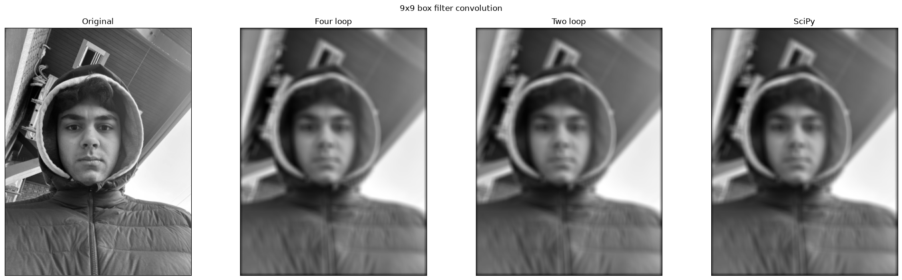
Since all three implementations match, for Dx and Dy I only show the SciPy result.
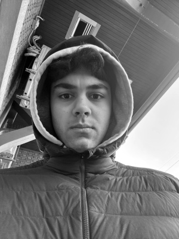
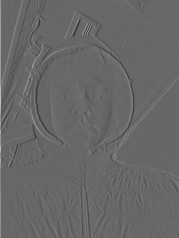
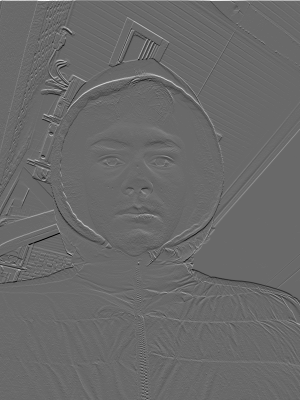
I scaled the cameraman image to [0, 1] and convolved it with Dx and Dy to get the partial derivatives in x and y. Dx picks up vertical edges (tripod legs, the sides of buildings) and Dy picks up horizontal edges (the skyline, the top of the shoulder). The gradient magnitude combines the two into one edge-strength image, regardless of the edge's direction:
dx, dy = scipy_convolve(img, Dx), scipy_convolve(img, Dy)
magnitude = np.sqrt(dx ** 2 + dy ** 2)
edges = magnitude > 0.35To get an edge image, I binarized the gradient magnitude: every pixel above the threshold becomes 1 (white) and everything else 0 (black). A low threshold lets the grass texture and noise through, and a high one breaks up the real edges. I chose 0.35, which removes almost all of the grass while keeping the outlines of the man, camera, and tripod. The cost is that those outlines are thin and broken in places, and fainter edges like the background buildings mostly disappear. The thin lines around the border come from zero padding (the jump from the image to the black padding counts as an edge).
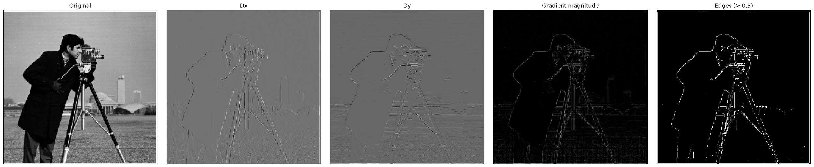
The finite difference results are noisy because derivatives amplify any small pixel-to-pixel change, not
just real edges. To fix this I first blurred the image with a Gaussian, built from
cv2.getGaussianKernel and an outer product with its transpose. I used σ = 1 and a 7x7
kernel (about 3σ on each side of the center), then repeated the procedure from Part 1.2:
g = cv2.getGaussianKernel(7, 1)
blurred = scipy_convolve(img, g @ g.T)
dx, dy = scipy_convolve(blurred, Dx), scipy_convolve(blurred, Dy)
magnitude = np.sqrt(dx ** 2 + dy ** 2)
edges = magnitude > 0.1Blurring spreads each edge across a few pixels, so gradient magnitudes are smaller overall and I lowered the threshold to 0.1. Compared to Part 1.2, the edges are thicker and continuous (the tripod legs and coat are solid outlines instead of broken ones), the grass noise is still gone even at this much lower threshold, and more of the background skyline survives. The tradeoff is that edges are less sharply localized.
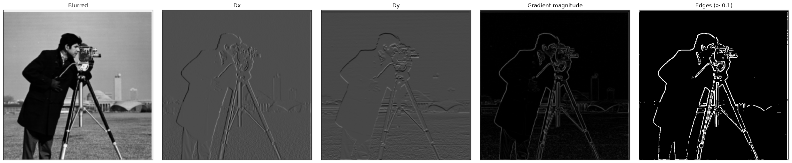
Since convolution is associative, (image * G) * Dx = image * (G * Dx). So I can instead convolve the Gaussian with Dx and Dy once to make derivative of Gaussian filters, then apply a single convolution to the image:
dog_x, dog_y = convolve2d(g @ g.T, Dx), convolve2d(g @ g.T, Dy)
dx, dy = scipy_convolve(img, dog_x), scipy_convolve(img, dog_y)The DoG x filter is a bright blob next to a dark blob (left to right), so it responds to left-to-right brightness changes; the DoG y filter is the same rotated vertically. The results match the two-step version: away from the border the gradient magnitudes differ by at most about 1e-16, and the binarized edge images are identical pixel for pixel. (The gradient magnitude panel looks brighter here only because matplotlib scales each image to its own maximum, and the two methods handle the zero-padded border differently.)
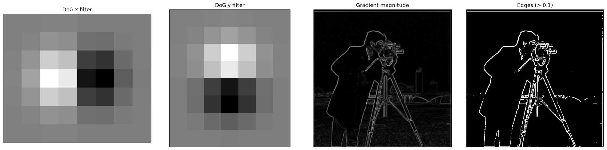
A Gaussian blur is a low-pass filter: averaging each pixel with its neighbors keeps slow, smooth changes in brightness (low frequencies) and removes fast ones like edges and texture (high frequencies). So subtracting the blurred image from the original leaves only the high frequencies. An image looks sharper when its high frequencies are stronger, so unsharp masking adds extra high frequencies back:
sharpened = img + alpha * (img - img * G)
This can be rewritten as a single convolution. Let e be the unit impulse (all zeros with a 1
in the center), so img * e = img. Then
sharpened = img * ((1 + alpha) e - alpha G), and (1 + alpha) e - alpha G is the
unsharp mask filter:
def gaussian(sigma):
g = cv2.getGaussianKernel(6 * sigma + 1, sigma)
return g @ g.T
def unsharp_filter(sigma, alpha):
G = gaussian(sigma)
e = np.zeros_like(G)
e[G.shape[0] // 2, G.shape[1] // 2] = 1
return (1 + alpha) * e - alpha * G
def convolve_rgb(img, kernel):
channels = [convolve2d(img[..., c], kernel, mode="same", boundary="symm") for c in range(3)]
return np.clip(np.stack(channels, axis=-1), 0, 1)
I used σ = 2 (a 13x13 kernel) and convolved each color channel separately. For the boundary I
mirrored the image (boundary="symm") instead of zero padding, since a black border would
otherwise get sharpened into a bright halo. alpha controls the strength: at
alpha = 1 the Taj Mahal's carvings, arches, and railings are noticeably crisper, and at
alpha = 3 it is over-sharpened, with halos around the dome and trees and a grainy sky. The middle
panel (original minus blurred, shifted to gray) shows exactly what gets boosted: only edges and texture.
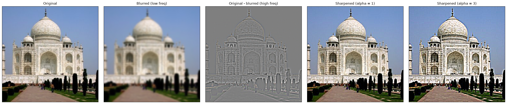
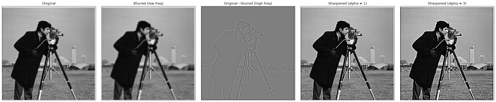
Evaluation. I took a sharp photo of a zebra, blurred it with σ = 2, and then sharpened the blurred version with the same σ and alpha = 3. The large, high-contrast features come back well: the thick stripes and the outlines of the ears and head look nearly as crisp as the original. The fine detail does not come back: the eyelashes, mane hairs, and dry grass stems are still missing. The blur removed those details almost entirely, and sharpening can only amplify what is left, so it can't recover lost information. It also overshoots: the stripes end up higher contrast than the original, with thin halos along their edges.
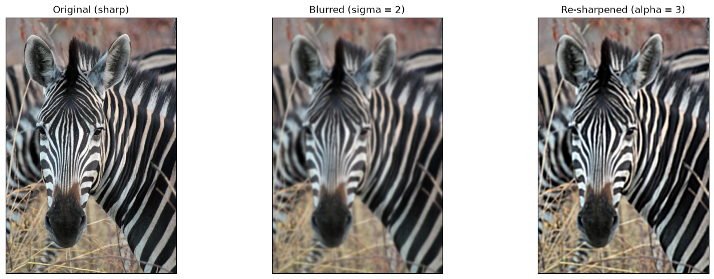
A hybrid image looks like one picture up close and a different one from far away. Up close you can see fine detail, and it dominates what you notice. From far away that detail is too small to see, so only the smooth, blurry structure is left. So a hybrid is the high frequencies of one image plus the low frequencies of another:
def low_pass(img, sigma):
return cv2.GaussianBlur(img, (0, 0), sigma)
def high_pass(img, sigma):
return img - low_pass(img, sigma)
def hybrid_image(im1, im2, sigma1, sigma2):
return np.clip(high_pass(im1, sigma1) + low_pass(im2, sigma2), 0, 1)The low-pass filter is a Gaussian blur, and the high-pass filter is the impulse minus the Gaussian (the image minus its blur), as suggested by Oliva et al. All images are converted to grayscale.
Alignment. Before filtering, the two images are aligned with the provided starter code: it shifts,
scales, and rotates the first image so that the two eyes land in the same place in both images, then crops
both to the same size. Instead of clicking the points each run, I measured the eye positions once and pass
them in. I made one change to the starter code: it filled the padding and rotated corners with black, and
the high-pass filter turned that black border into a strong line through the hybrid. Padding with the
nearest edge pixel instead ('edge' mode) removes it.
Rushil is the high-frequency image (up close) and I am the low-frequency image (far away), with sigma1 = 4 and sigma2 = 8. Up close you see Rushil's eyes, eyebrows, beard texture, and individual hair strands. From far away the fine detail disappears and what remains is my face shape, hair, and smile.
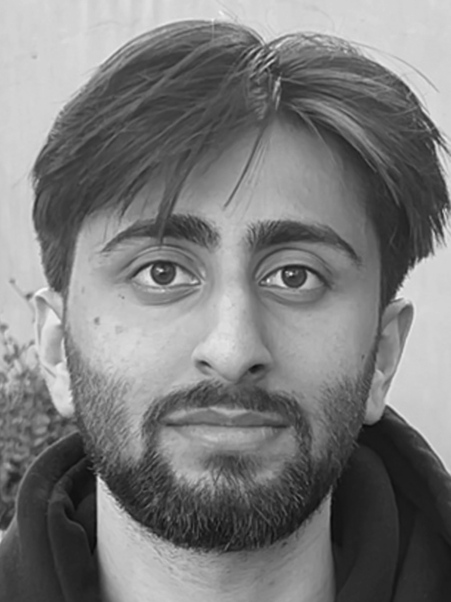
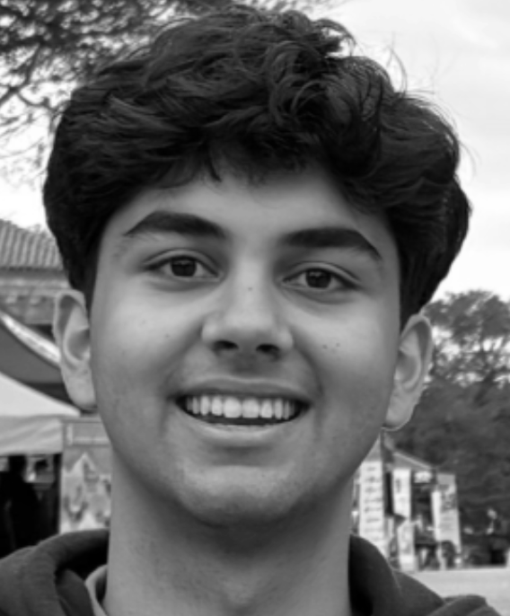
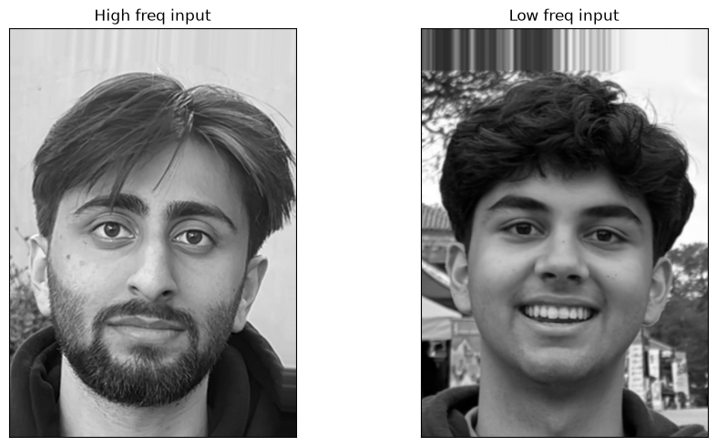
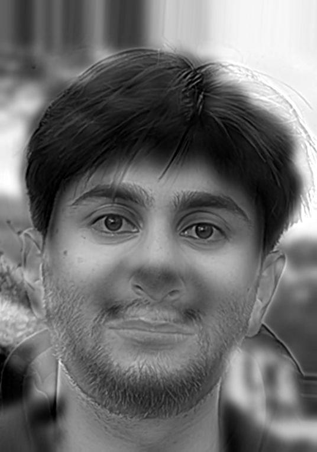
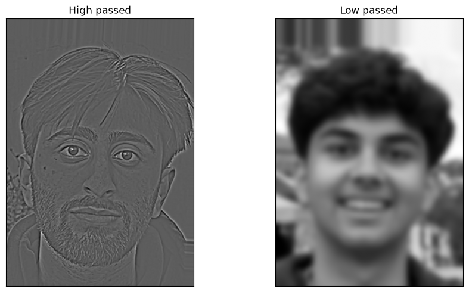
Cutoff frequencies. A Gaussian blur with standard deviation sigma passes half the amplitude at about
0.19 / sigma cycles per pixel. So the low pass on Mohul (sigma2 = 8) keeps frequencies below
about 0.023, and the high pass on Rushil (sigma1 = 4) keeps frequencies above about 0.047. The gap between
the two cutoffs means the images don't compete in the same frequency range, so the hybrid switches from
one face to the other instead of showing both at every distance.
Frequency analysis. Each panel below is the log magnitude of the 2D Fourier transform. The center is the lowest frequency, and the farther a point is from the center, the higher the frequency. The low-passed image keeps only a small bright region at the center, and the high-passed image has its center dimmed with the outer frequencies remaining. The hybrid's spectrum combines the two: its center comes from Mohul and its outer region from Rushil.
def log_fft(img):
return np.log(np.abs(np.fft.fftshift(np.fft.fft2(img))) + 1e-8)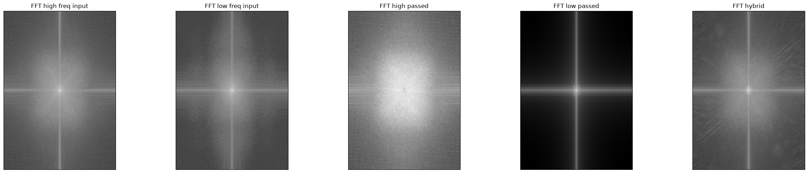
The provided sample images, with Nutmeg as the high-frequency image and Derek as the low-frequency image (sigma1 = 6, sigma2 = 12). I tried Derek as the high-frequency image first, but his face is smooth and has little fine detail, so it disappeared into the cat. The cat's whiskers and fur are almost all high frequency, which makes it the better choice for the up-close image.
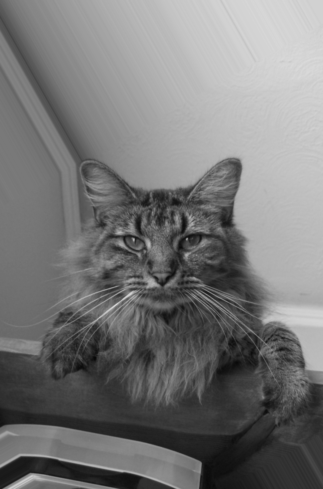
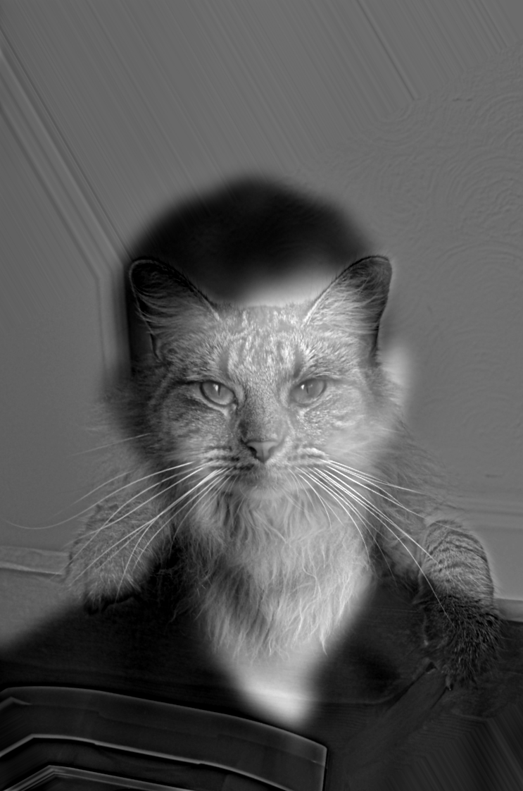
A sharp, high-resolution studio portrait for the high frequencies and a softer portrait for the low frequencies (sigma1 = 6, sigma2 = 16). Up close you see the first face's eyes, freckles, and hair texture; from far away it turns into the second face. The first face was about 3x larger, so I scaled it down by half and scaled the second one up to match, which keeps most of the detail instead of shrinking it all the way. I also boosted the high-pass layer slightly (1.4x) and faded it out near the edges with a soft oval mask, so the first face's wider cheek outline doesn't show up as a line.
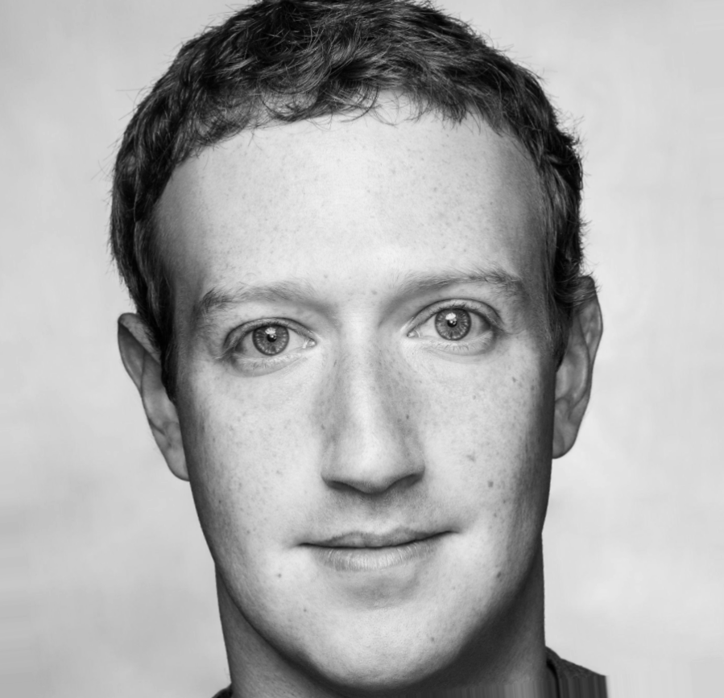
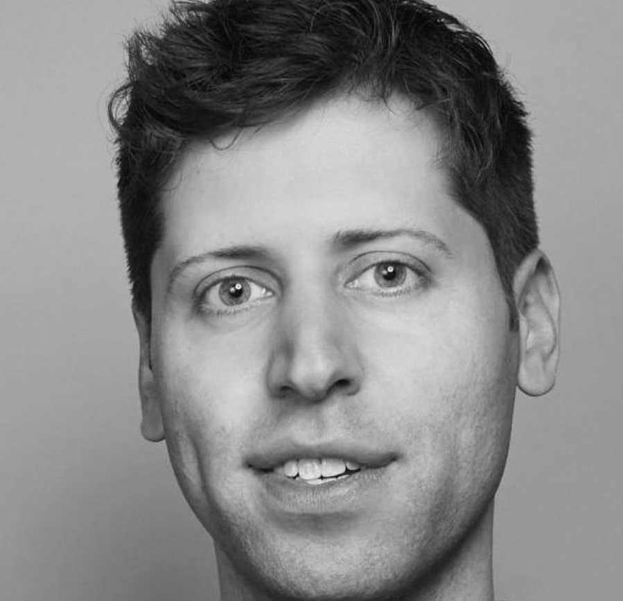
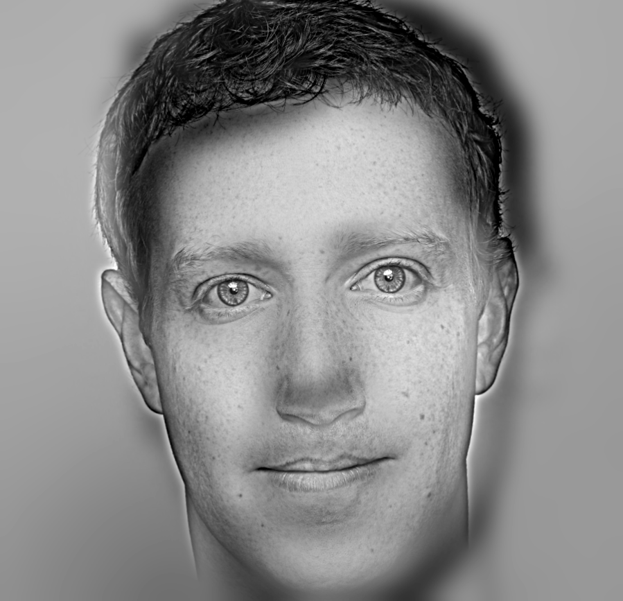
Two selfies taken seconds apart from the same spot: a frown for the high frequencies and a smile for the low frequencies (sigma1 = 5, sigma2 = 12). Up close you see the furrowed brows and pout; from far away it becomes a smile.
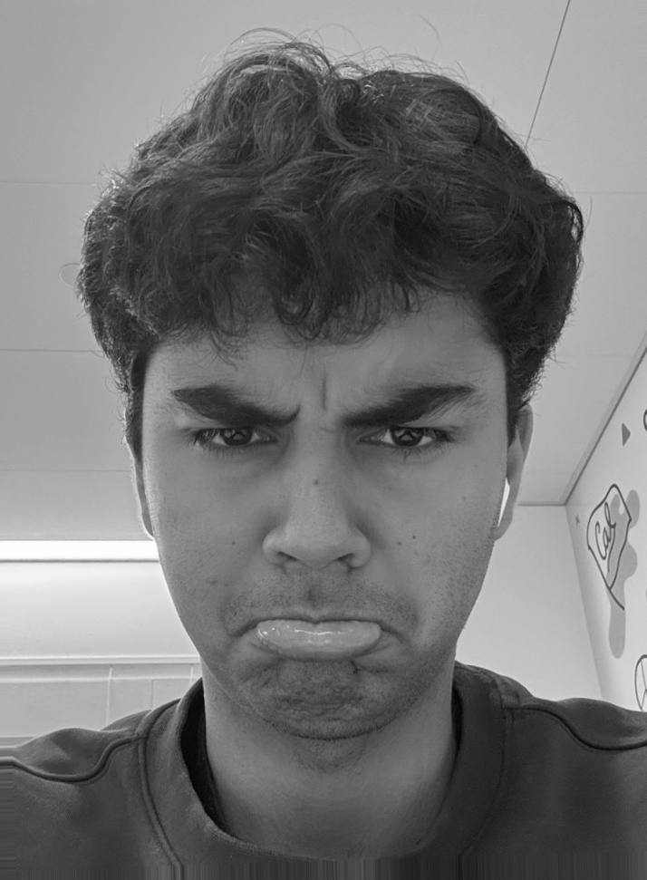
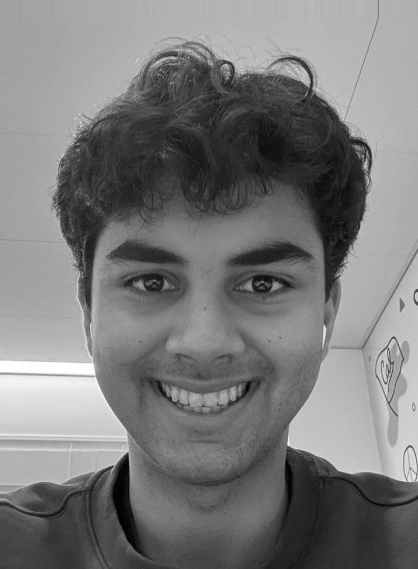
A Gaussian stack blurs an image over and over, keeping every level at full size. Each level keeps only coarser structure than the one before it. A pyramid does the same thing but also halves the image at every level; a stack skips the downsampling, so all levels are the same size. To make each level about twice as blurry as the previous one (like a pyramid level that was downsampled by 2), I double sigma at every step: sigma = 2, 4, 8, 16, 32.
A Laplacian stack is the difference between neighboring Gaussian levels, with the blurriest Gaussian level as its last layer. Each Laplacian level is one frequency band: the detail that one extra blur removed. L0 holds the finest texture (the orange's peel dimples), the middle levels hold medium features (the apple's highlights and outlines), and the last level is just soft blobs of color. Because the differences cancel out, adding all the Laplacian levels back together gives exactly the original image (the maximum error was 1e-16).
def gaussian_stack(img, levels, sigma):
# blur repeatedly without downsampling
stack = [img]
for i in range(levels - 1):
stack.append(cv2.GaussianBlur(stack[-1], (0, 0), sigma * 2 ** i))
return np.array(stack)
def laplacian_stack(img, levels, sigma):
g = gaussian_stack(img, levels, sigma)
return np.concatenate([g[:-1] - g[1:], g[-1:]])Laplacian levels are centered on zero, so for display I stretch each one to [0, 1]; gray means zero.
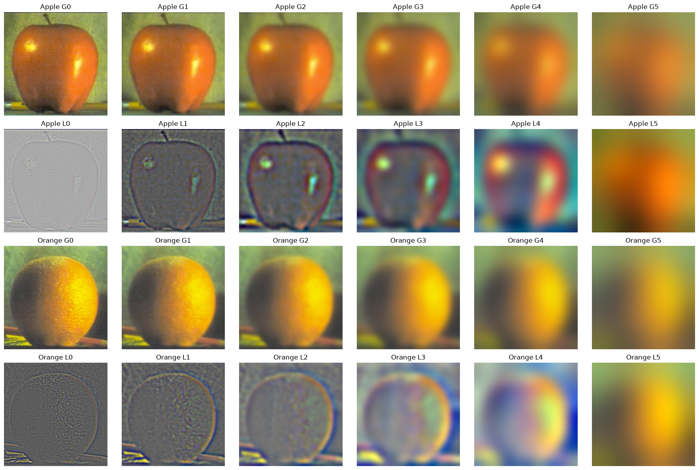
Recreating Szeliski Figure 3.42. The mask is 1 on the left half and 0 on the right, and I build a Gaussian stack of the mask too, so its edge gets softer at every level. Each row multiplies a Laplacian level of the apple by the blurred mask, and the same level of the orange by (1 - mask). At L0 the switch from apple to orange is almost a hard line, which is right for fine texture. At L4 it is a wide, gentle gradient, which is right for the big color difference between the fruits. The bottom row sums all the levels, giving the oraple with no visible seam.
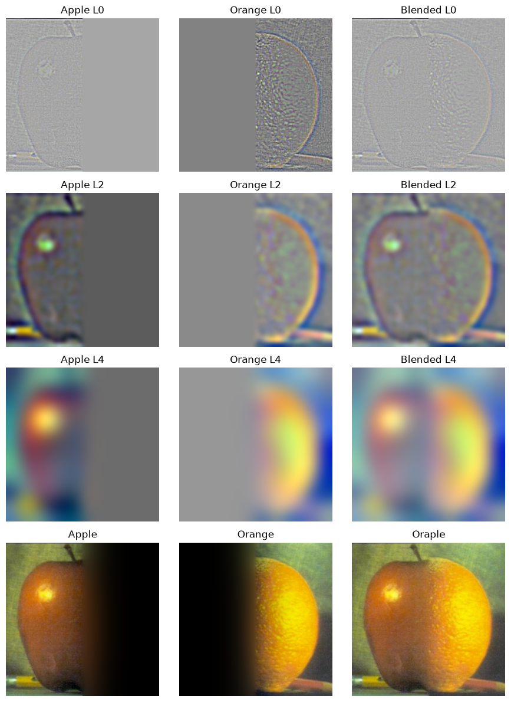
To blend two images, I build Laplacian stacks of both and a Gaussian stack of the mask (1 where I want the first image, 0 where I want the second). Each Laplacian level is blended with the matching level of the blurred mask, and the levels are summed. Because the mask gets blurrier at every level, fine detail switches from one image to the other across a narrow seam while the large, smooth color differences switch across a wide one. Blending with a hard mask at every level instead (the pyramid algorithm on page 226 of the paper) leaves a visible seam with stacks, so the mask always goes through its own Gaussian stack.
def blend(im1, im2, mask, levels, sigma):
l1, l2 = laplacian_stack(im1, levels, sigma), laplacian_stack(im2, levels, sigma)
gm = gaussian_stack(mask, levels, sigma)
return np.clip((l1 * gm + l2 * (1 - gm)).sum(axis=0), 0, 1)Before blending, I line the images up by moving two matching points onto each other (the eyes for the bears, the top and bottom of the tower and the rocket), using a shift, scale, and rotation. The masks are drawn in code: a step function for straight seams, an ellipse, and a polygon traced around the tower.
A teddy bear and Oski, aligned on the eyes, with a vertical step mask that puts the seam between the eyes (5 levels, sigma = 2).
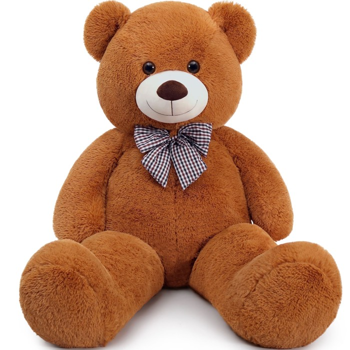
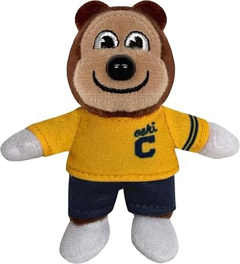
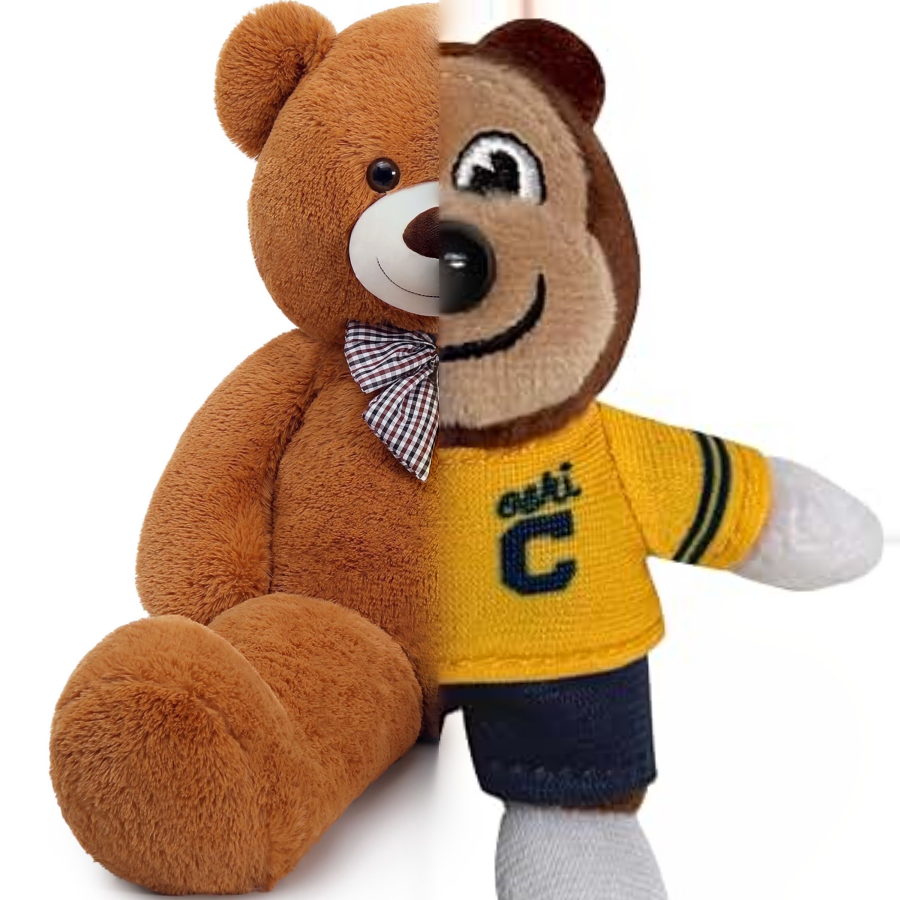
The vertical seam works, but the two bodies are different shapes, so the halves don't line up below the face. I thought an elliptical mask around just the face would be more interesting.
An ellipse around Oski's face, drawn on the Oski photo and warped along with it. The tan face blends into the teddy's orange fur with no visible edge.
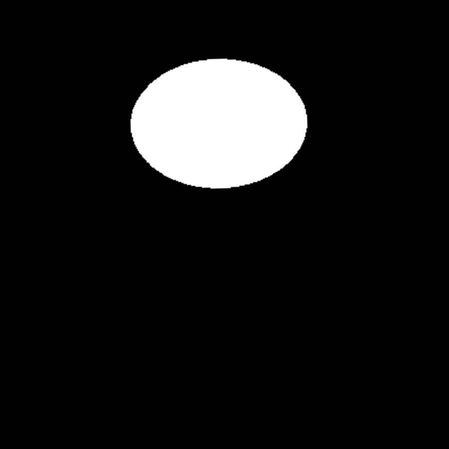
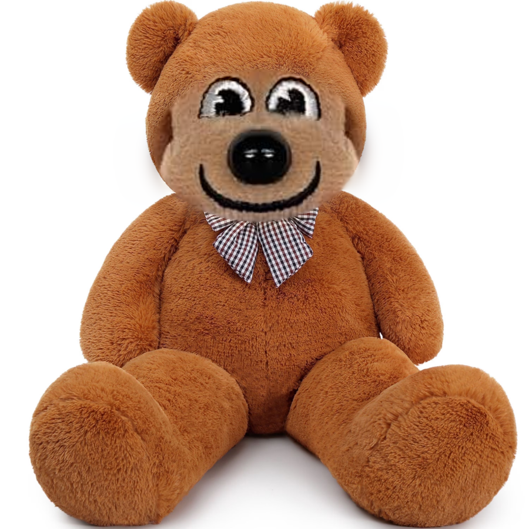
A polygon traced around the Campanile (spire, belfry, and shaft), scaled and rotated onto the rocket's body so the tower lifts off on the rocket's flame (5 levels, sigma = 1). The coarsest level mixes in a little of the Campanile photo's dark background, which shows as a faint haze around the tower.
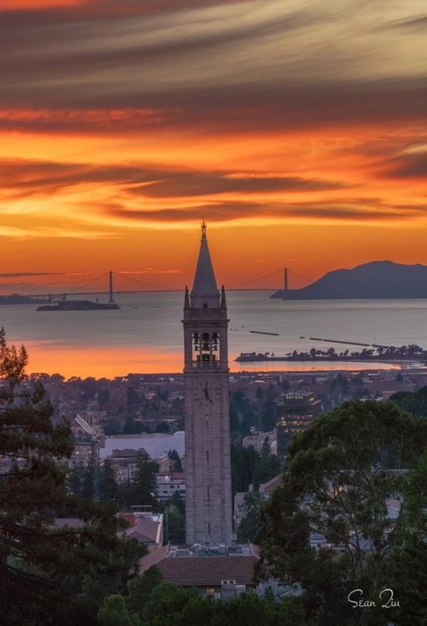
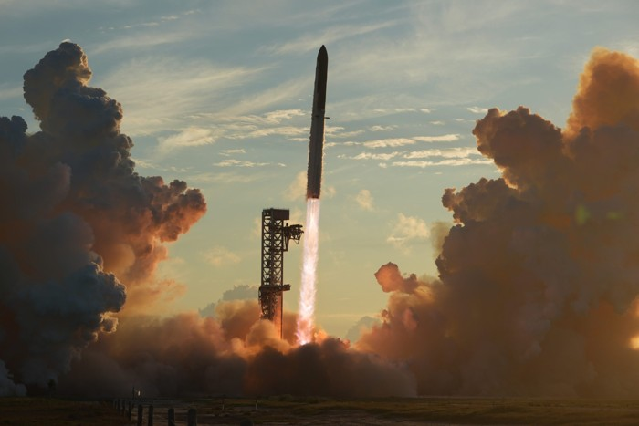
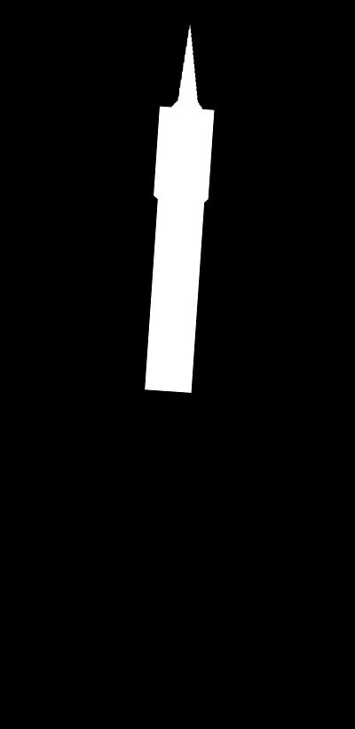
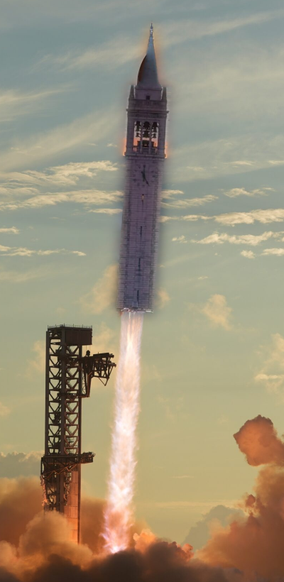
For the teddy and Oski, each row shows one Laplacian level of the masked Oski, the masked teddy, and their sum. The mask's edge gets softer at each coarser level. The bottom row shows the masked inputs and the final blend.
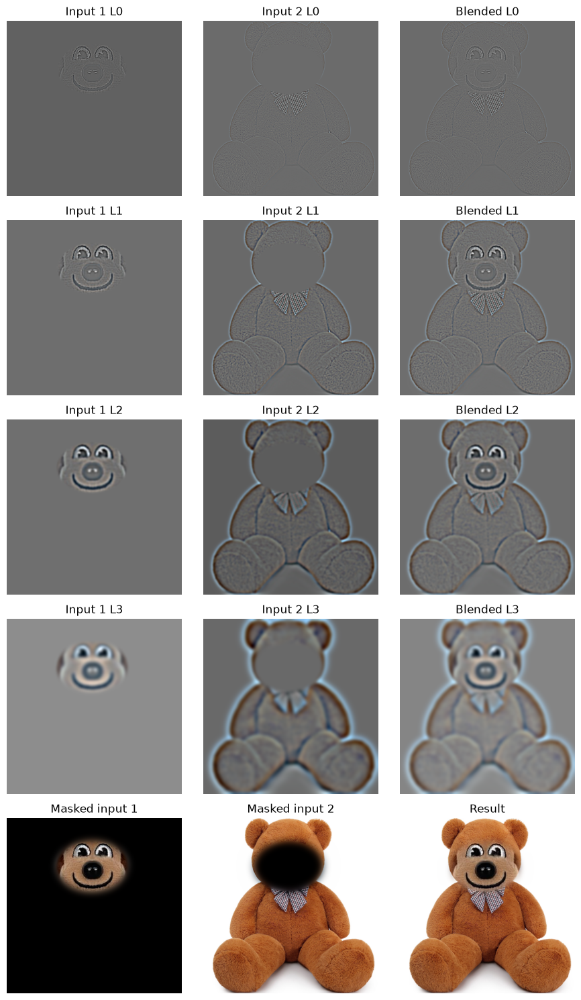
The most important thing I learned is that almost everything in this project comes down to separating an image into low and high frequencies with a Gaussian blur. Sharpening boosts the high frequencies, hybrid images combine one image's low frequencies with another's high frequencies, and multiresolution blending splits images into many frequency bands and blends each one with its own seam width.